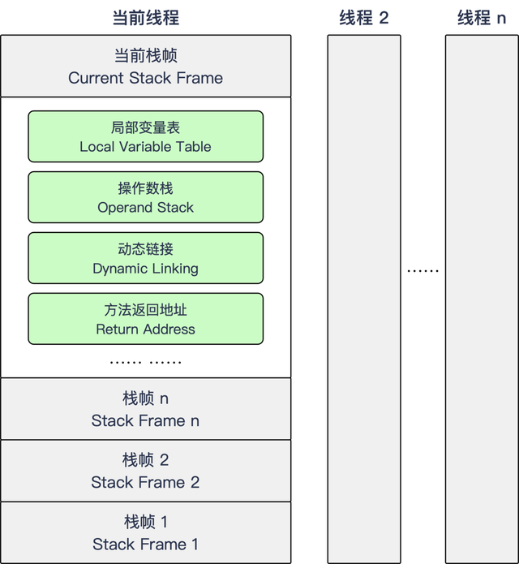

作为学习ASM的前置知识，今天来了解一下JVM的运行时栈帧

Java虚拟机以方法作为最基本的执行单元，“栈帧”(Stack Frame)则是用于支持虚拟机进行方法调用和方法执行背后的数据结构，它也是虚拟机栈(Virtual Machine Stack)的栈元素。栈帧存储了方法的局部变量表、操作数栈、动态连接和方法返回地址等信息。每一个方法从调用开始至执行结束的过程，都对应着一个栈帧在虚拟机栈里边从入栈到出栈的过程。
每个栈帧都包括了局部变量表、操作数栈、动态连接、方法返回地址和一些额外的附加信息。栈帧中需要多大的局部变量表、需要多深的操作数栈就已经被分析计算出来，并且写入到方发表的Code属性中。换言之，一个栈帧需要分配多少内存，并不会受到程序运行期变量数据的影响，而仅仅取决于程序源码和具体的虚拟机实现的栈内存布局形式。
一个线程中的方法调用链可能会很长，对于执行引擎来讲，在活动线程中，只有位于栈顶的方法才是在运行的，只有位于栈顶的栈帧才是生效的，其被称为“当前栈帧”(Current Stack Frame)，与这个栈帧所关联的方法别称为“当前方法”(Current Method)。执行引擎所运行的所有字节码指令都只针对当前栈帧进行操作。
典型的栈帧结构如下：

本文只会详细了解栈帧中的局部变量表和操作数栈的作用和数据结构。
1 局部变量表
局部变量表(Local Variables Table)是一组变量值的存储空间，用于存储方法参数和方法内部定义的局部变量。在Java程序被编译成Class文件时，就在方法的Code属性的max_locals数据项中确定了该方法所需要分配的局部变量表的最大容量。
局部变量表的容量以变量槽(Variable Slot)为最小单位。一个变量槽可以存放一个32位以内的数据类型，Java中占用不超过32位存储空间的数据类型有boolean、byte、char、short、int、float、reference(对象实例的引用)和returnAddress(很少见忽略)这8种类型。对于64位的数据类型，Java虚拟机会以高位对齐的方式为其分配两个连续的变量槽空间。Java语言中明确的64位数据类型只有long和double两种。
Java虚拟机通过索引的方式使用局部变量表，索引值的范围从0开始至局部变量表最大的变量槽数量。如果访问的是32位数据类型的变量，索引N就代表了使用第N个变量槽，如果访问的是64位数据类型的变量，则会同时使用第N和N+1两个变量槽。对于共同存放一个64位数据的两个变量槽，虚拟机不允许采用任何方式单独访问其中的某一个。
当一个方法被调用时，Java虚拟机会使用局部变量表来完成参数值到参数变量列表的传递过程，即实参到形参的传递。如果执行的是实例方法(没有被static修饰的方法)，那局部变量表中第0位索引的变量槽默认是用于传递方法所属对象实例的引用，在方法中可以通过”this”来访问到这个隐含的参数，其余参数则按照参数表顺序排列，占用从1开始的局部变量槽，参数表分配完毕后，再根据方法体内部的变量顺序和作用域分配其余的变量槽。
为了尽可能节省栈帧耗用的内存空间，局部变量表中的变量槽是可以重用的，方法体中定义的变量，其作用域并不一定会覆盖整个方法体，如果当前字节码PC计数器的值已经超出了某个变量的作用域，那这个变量对应的变量槽就可以交给其他变量来重用。
2 操作数栈
操作数栈(Operand Stack)，它是一个后入先出(Last In First Out，LIFO)栈。同局部变量表一样，操作数栈的最大深度也在编译的时候被写入到Code属性的max_stacks数据项之中。操作数栈的每一个元素都可以是包括long和double在内的任意Java类型数据。32位数据类型所占的栈容量为1，64位数据所占的栈容量为2。
当一个方法刚开始执行时，这个方法的操作数栈是空的，在方法的执行过程中，会有各种字节码指令往操作数栈中写入和提取内容，也就是出栈和入栈操作。譬如在做算数运算的时候是通过将运算涉及的操作数栈压入栈顶后调用运算指令来进行的，又譬如在调用其他方法的时候是通过操作数栈来进行方法参数的传递。举例：整数加法的字节码指令iadd，这条指令在运行的时候要求操作数栈中最接近栈顶的两个元素已经存入了两个int型的数值，当执行这个命令时，会把这两个int值出栈并相加，然后将相加的结果重新入栈。
操作数栈中元素的数据类型必须与字节码指令的序列严格匹配。以上边的iadd指令为例，这个指令只能用于整型数的加法，它在执行时，最接近栈顶的两个元素的数据类型必须为整型。
Java虚拟机的解释执行引擎被称为“基于栈的执行引擎”，里面的“栈”就是操作数栈。